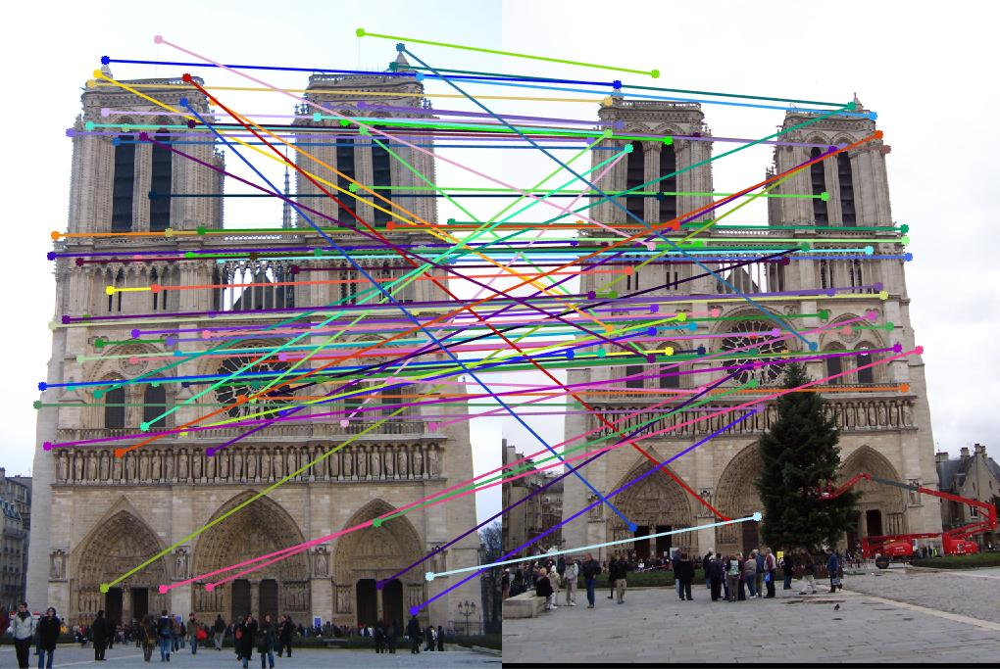

Project 2: Local Feature Matching
Fig 1: Notre Dame after SIFT calculation (86% Correct).
In this project, I implement SIFT and improve performance up to 86%, 98% and 82% in the provided Notre Dame, Mount Rushmore and Episcopal Gaudi fiigures. This report is organized into 3 parts. In Part 1, I will discuss the baseline result and implementation. In Part 2, I will discuss the SIFT algorithm and its implementation details. In the end, I will provide the comparison and my experimental results.
- Part 1: BaseLine Implementation and Discussion
- Part 2: SIFT Implementation and Discussion
- Part 3: Experimental Result and Comparison
Part 1: BaseLine Implementation
In this part, I will discuss my baseline algorithm. In the very beginning, I should mention my Harris(1988) Method first in my baseline. In Harris Method, we use 2 eigenvalues to determine our good features. From previous papers, we can find that using Gaussian weighting window to replace square path can have better performance. In addition, from Schmid (2000), if we choose sigma_d=1 (scale of derivative Gaussian) and sigma_i=2 (scale of integration Gaussian) could have better performance.
The MATLAB Code in thehighlighting folder is configured to demonstrate my Harris Method.
Part 1.1: Harris Method
%Harris Method code:
alpha=0.06; %from Harris(1988) paper
gaussian=fspecial('Gaussian',[5,5],1); %from Schmid (2000) paper
[gx,gy]=imgradient(gaussian);
ix=imfilter(image,gx);
iy=imfilter(image,gy);
%%%%%%%%%%%%%%
large_gaussian=fspecial('Gaussian',[5,5], 2); %from Schmid (2000) paper
ixx=imfilter(ix.*ix,large_gaussian);
iyy=imfilter(iy.*iy,large_gaussian);
ixy=imfilter(ix.*iy,large_gaussian);
har=ixx.*iyy-ixy.*ixy-alpha.*(ixx+iyy).*(ixx+iyy); %from Harris(1988) paper
Part 1.2: Get Features
In get features, I use octangent to mapping my orientation. Because there is a 4x4 matrix into a 4x4 filter, we can use a*32+b*8+c to mapping its position.
The MATLAB Code in thehighlighting folder is configured to demonstrate my Get Features Function.
%Get Features
num_points=size(x,1);
features = zeros(size(x,1), 128);
small_gaussian=fspecial('Gaussian',[feature_width feature_width],1);
large_gaussian=fspecial('Gaussian',[feature_width feature_width],feature_width/2); %(16x16)
[gx,gy]=imgradientxy(small_gaussian);
ix=imfilter(image,gx);
iy=imfilter(image,gy);
get_octant=@(x,y)(ceil(atan2(y,x)/(pi/4))+4);
orients=arrayfun(get_octant,ix,iy);
mag=hypot(ix,iy); %Root Mean Square% % 600x800
c_size=feature_width/4;
for ix =1:num_points
if round(x(ix)-2*c_size)<1 %X:1:800
frame_x_range=1:4*c_size;
elseif round(x(ix)+2*c_size-1)>800
frame_x_range=800-4*c_size:799;
else
frame_x_range=round(x(ix)-2*c_size):round(x(ix)+2*c_size-1);
end
if round(y(ix)-2*c_size)<1 %Y:1:600
frame_y_range=1:4*c_size;
elseif round(y(ix)+2*c_size-1)>600
frame_y_range=600-4*c_size:599;
else
frame_y_range=round(y(ix)-2*c_size):round(y(ix)+2*c_size-1);
end
frame_mag=mag(fix(frame_y_range),fix(frame_x_range));
frame_mag=frame_mag.*large_gaussian;
frame_orients=orients(frame_y_range,frame_x_range);
for a=0:3
for b=0:3
cell_orients=frame_orients(a*4+1:a*4+4,b*4+1:b*4+4);
cell_mag=frame_mag(a*4+1:a*4+4,b*4+1:b*4+4);
for c=1:8
f = cell_orients == c;
features(ix,a*32+b*8+c)=sum(sum(cell_mag(f)));
end
end
end
features = (features./sum(features,2)); %Normalize feature vectors
end
Part 1.3: Match Features
In match features, we use MATLAB pdist function to get the difference of 2 matrix, sort our results and find the cofidence from inverse A matrix.
The MATLAB Code in the highlighting folder is configured to demonstrate my Match Features Function.
%Match Features Function
threshold=1.0; %Filter Nothing
num_features = min(size(features1, 1), size(features2,1));
dist_matrix=pdist2(features1,features2);
[sorted_dist_matrix,indices]=sort(dist_matrix,2);
inverse_confidences=(sorted_dist_matrix(:,1)./sorted_dist_matrix(:,2));
confidences=1./inverse_confidences(inverse_confidencesTable 1: Baseline Experimental Result
In this table, from top to buttom are my baseline results. We can easily find that feature points are not corresponding correctly. The accuracy of these 3 parts are 48%, 14% and 7%. The main reason behind this low accuracy is scale variation. The Mount Rushmore and Episcopal Gaudi fiigures are all have different scale which is extremely hard for histogram in our get_features code to correspond their features.
|  |
Part 2: SIFT Implementation and Discussion
Followd by steps of the SIFT paper, this part I will disclose how I implement the simplified SIFT algorithm. First of all, we can see the complete SIFT algorithm below. This figure explicitely teach us how to implement the SIFT method. However, I only implement Step 1, 2, 3, 7 and 8 parts.
Part 2.1: DoG Pyramid Implementation Result
This MATLAB Code in the highlighting folder explicitly disclose my implementaion of octave and sigma variation, how I use MATLAB built-in Cell to implement and storage these images and transfer them to the DoG Pyramid.
%DoG Pyramid code
init_sigma = 1.6; % from paper
interval = 3; % number of intervals per octave
k = 2^(1/interval);
sigma = ones(1,interval+3);
sigma(1) = init_sigma;
sigma(2) = init_sigma*sqrt(k*k-1);
for i = 3:interval+3
sigma(i) = sigma(i-1)*k;
end
input_img = imresize(input_img,2);
input_img = gaussian(input_img,sqrt(init_sigma^2-0.5^2*4));% from paper
octaves=3;
% Gaussian pyramid
[img_height,img_width] = size(input_img);
gaussian_pyramid = cell(octaves,1); % use cell to storage
gaussian_img_size = zeros(octaves,2);% set image size
gaussian_img_size(1,:) = [img_height,img_width];
for i = 1:octaves
if (i~=1)
gimg_size(i,:) = [round(size(gaussian_pyramid{i-1},1)/2),round(size(gaussian_pyramid{i-1},2)/2)];
end
gaussian_pyramid{i} = zeros( gaussian_img_size(i,1),gaussian_img_size(i,2),interval+3 );
end
for i = 1:octaves
for j = 1:interval+3
if (i==1 && j==1) %Initial Image
gaussian_pyramid{i}(:,:,j) = input_img;
elseif (j==1)
gaussian_pyramid{i}(:,:,j) = imresize(gaussian_pyramid{i-1}(:,:,interval+1),0.5); %Rescale 0.5
else
gaussian_pyramid{i}(:,:,j) = gaussian(gaussian_pyramid{i}(:,:,j-1),sigma(j));
end
end
end
% DoG Pyramid
dog_pyramid = cell(octaves,1);
for i = 1:octaves
dog_pyramid{i} = zeros(gaussian_img_size(i,1),gaussian_img_size(i,2),interval+2);
for j = 1:interval+2
dog_pyramid{i}(:,:,j) = gaussian_pyramid{i}(:,:,j+1) - gaussian_pyramid{i}(:,:,j);
end
end

|
Part 2.2: Oreientation Assignment Result
This MATLAB Code in the highlighting folder explicitly disclose my implementaion of orientation assignment. After doing the DoG Pyramid, we need to pass our scale and orientation results to the next function. This code reveals how I use MATLAB built-in Struct to implement and storage these information and transfer them to my match feature function.
%% Orientation Assignment
n = size(data_array,2);% number of interest points
ori_sigma_factr = 1.5; % determines gaussian sigma for orientation assignment
ori_histogram_bins = 8; % number of bins in histogram:8~32
ori_peak_ratio = 0.8; % orientation magnitude relative to max that results in new feature
features = struct('data_index',0,'x',0,'y',0,'scl',0,'ori',0,'descr',[]); % array of feature
feature_index = 1;
for i = 1:n
data = data_array(i);
ori_sigma = ori_sigma_factor * data.scl_octave;
histpgram = ori_Histogram(gaussian_pyramid{data.octv}(:,:,data.intvl), ...
data.x,data.y,ori_hist_bins,round(3*ori_sigma),ori_sigma);
feat_index = add_Ori_Features(i,feature_index,data,histogram,ori_histogram_bins,ori_peak_ratio);
end
Table 2: SIFT Experimental Result
In this table, from top to buttom are my SIFT results. These feature points are corresponding correctly. The accuracy of these 3 parts are 86%, 97% and 82%. The main reason behind this is high accuracy is the DoG Pyramid, Orientation Assignment, and Interpolation. The Mount Rushmore and Episcopal Gaudi fiigures can have high accuracy even with large different scale.
The match feature function is basically the same between my SIFT and Baseline codes. In this sense, I dont't mention this function in this chapter. In addition, SIFT is a more complex function including other implementations like edge detection, filtering or other technical skills, this report only implement the most basic parts.
Part 3: Experimental Result and Comparison
In the end, I want to provide the summary of my report. We can easily find that our simplified SIFT with only adding octaves ,scales and orientation could improve our performance drametically comparied with the Harris Method. Even with higher accuracy, SIFT is much slower than Harris Method.
| Method \ Graph | Notre Dame | Mount Rushmore | Episcopal Gaudi |
| BaseLine | 48% | 14% | 7% |
| SIFT (Simple) | 86% | 97% | 82% |
Reference:
1. SIFT in MATLAB: http://www.sun11.me/blog/2016/sift-implementation-in-matlab/ (Chinese Blog) 2. SIFT Interest Point Detection from MATWORKS: https://www.mathworks.com/matlabcentral/fileexchange/46118-sift-key-point-detector-in-matlab?requestedDomain=www.mathworks.com 3. IPOL Journal: Anatomy of the SIFT Method http://www.ipol.im/pub/art/2014/82/ 4. IPOL Journal Anatomy of the SIFT Method C Code: http://www.ipol.im/pub/art/2014/82/sift_anatomy_20141201.zip